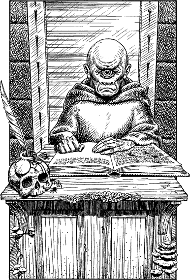

150
Beyond the door awaits an echoing hall which reeks of decay. Its walls are adorned with gruesome paintings which depict terrible scenes of human slaughter. One in particular catches your eye and, although you try hard to ignore it, you find you cannot turn your head away. It shows a pit of helpless humans, writhing and screaming in anguish as they are slowly consumed by packs of wild-eyed plague dogs. The scene shocks you deeply for the doomed humans all have distinct Sommlending features.
With difficulty you tear your eyes away and force yourself to look elsewhere in this unfriendly hall. You see columns rising to the roof, each wound round with creepers and fungi which give off an unwholesome, pallid light. Ahead you see another door, identical to that by which you have entered, and before it there stands a desk on top of a plinth of green stone. A creature sits at the desk, huddled over the open pages of a ledger upon which it is writing with a feathered quill pen. As you draw closer it stops scrawling and places its quill into a nearby pot of ink, fashioned from the crown of a human skull. The creature raises its hairless head and stares at you unblinkingly with its solitary eye.

‘Who seeks an audience with He?’ it croaks, hoarsely. ‘State your name, brother, and your purpose here.’
You are standing in the antechamber of Arch Druid Cadak’s throne hall. To enter the hall itself and, hopefully, discover where the deadly virus is being cultivated, you know that you must first persuade this creature to allow you to pass.
If you decide to say that you have come from the battlefront with important news for the Arch Druid, turn to 314.
If you wish to say that you are an agent who has just arrived from the Lastlands with vital information for Cadak’s eyes only, turn to 208.
If you possess Animal Mastery and wish to use it to exert control over this creature’s mind, turn to 91.